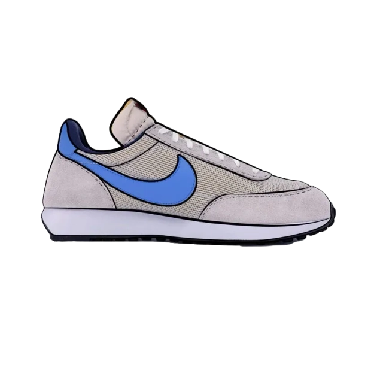
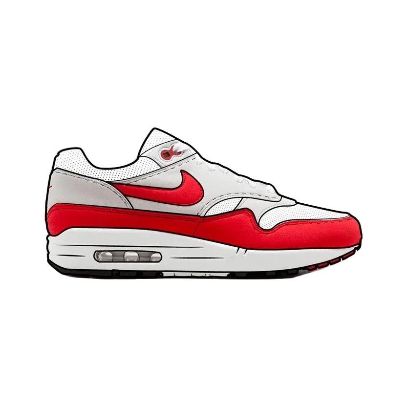
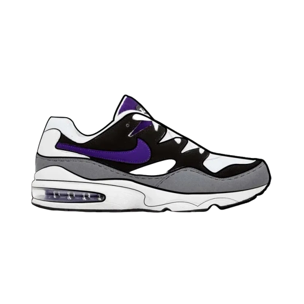
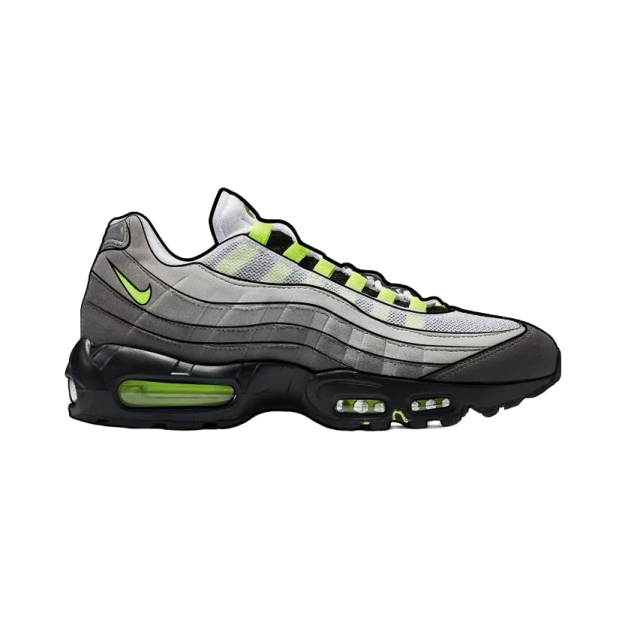
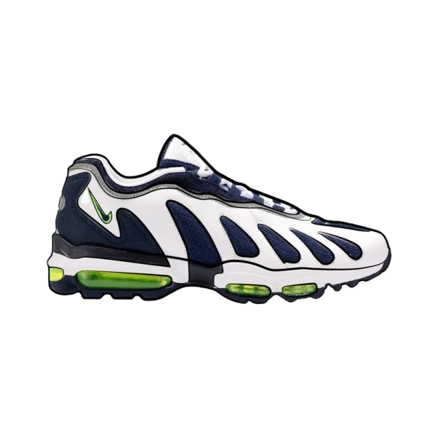
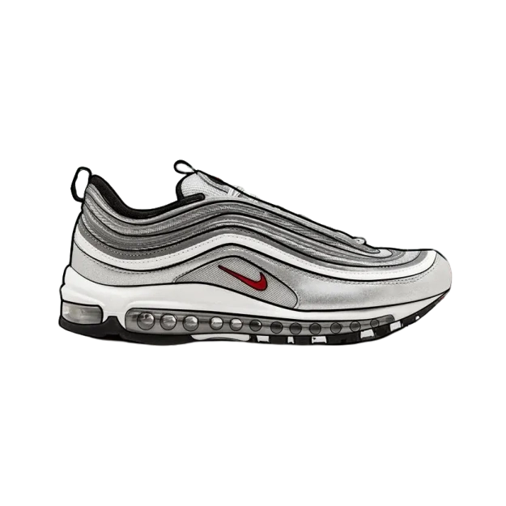
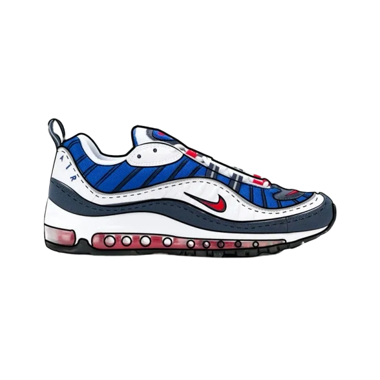
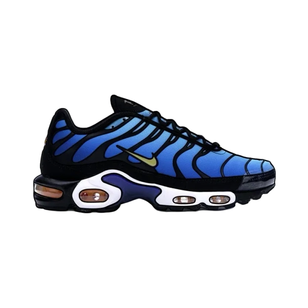

Air Max, cronología de la mejor línea de zapatillas de la historia
La tecnología "Nike Air" consiste en aire presurizado dentro de una bolsa resistente pero flexible
y brinda más flexibilidad y elasticidad sin comprometer la estructura . Las unidades "Air-Sole"
mantienen su forma dada con elasticidad, menor impacto y mantienen la zapatilla cómoda y
liviana.
-Nike
¿Es "Air Max", la mejor línea de zapatillas de la historia? Es una pregunta atrevida, pero creemos
que también su respuesta es indiscutible. Sin duda. Debido a su pasión por la ciencia, su objetivo de
revolucionar nuestra experiencia con las zapatillas deportivas, desarrollando continuamente la
tecnología
"Air" de formas innovadoras con cada nuevo lanzamiento. Para comprender mejor las zapatillas con el logo
Swoosh que usamos hoy en día, debemos explorar sus siluetas e historia:
Modelos icónicos

Air Tailwind
La primera zapatilla que incorporaba tecnología de amortiguación de aire. La idea revolucionaria de añadir aire a una zapatilla surgió del ex ingeniero de la NASA Frank Rudy. "Una pequeña idea de Rudy, un gran paso para Nike" . Las zapatillas Air Tailwind se lanzaron por primera vez en cantidades extremadamente limitadas para la maratón de Honolulu de 1978.

Air Max 87´
Air Max 1 87´,diseñada por Tinker Hatfield , la Nike Air Max 1 fue la primera zapatilla que ofrecía una ventana en la suela. El innovador diseñador se inspiró en el Centro Georges Pompidou de París para diseñar la zapatilla que hizo visible su tecnología Air.
Air Max Light
Air Max Light,igual que las Air Max 1, pero (como era de esperar) menos pesadas, Nike modificó su exitosa silueta con espuma EVA para lograr una sensación completamente nueva.
Air Max 90'
Air Max 90´,que originalmente se denominaban Air Max 3, reinventaron por completo las zapatillas Air Max para la nueva década. Hoy en día, las Air Max 90 siguen siendo unas de las zapatillas más populares del mundo.
Air Max BW
Air Classic BW. Las Nike Air Classic BW eran originalmente una versión más elegante de las Air Max 90, con una ventana Air más grande (sí, BW realmente significa "Big Window"). Más recientemente, las Nike Air Max BW se han actualizado con una suela Air de longitud completa tomada prestada de las Air Max 97. Se vieron por primera vez en un modelo SKAir de Skepta; creemos que los cambios mejoran considerablemente la zapatilla.
Air Max 180
Air Max 180´. La primera zapatilla Nike que mostró la tecnología Air en su suela, la Nike Air Max 180 (vistas de 180 grados del aire visible), se alejó en muchos sentidos de la fórmula probada de las primeras Air Max.
Air Max 93'
Air Max93´. Creado mediante una técnica de moldeado por soplado, la Air Max 93 (la Air Max 270 original) tomó el diseño de la Air Max 180 y nos dio unidades Air de colores, un ajuste similar al de un calcetín y más aire.

Air Max 94'
Air Max 94´. Entrando en un territorio más desconocido en nuestro viaje a través de la historia de Air Max, la Air Max de 1994 (previsiblemente llamado Air Max 94) es frecuentemente pasada por alto o desconocida incluso por los coleccionistas de zapatillas más ávidos. Entonces, ¿qué es? Es esencialmente un híbrido de Nike Air Max Light y Nike Air Max 93.
Air Max 2
Air Max 2.Este fue uno de los últimos Air Max que diseñó Tinker Hatfield, e introdujo múltiples cámaras Air con diferentes presiones para una amortiguación y un soporte estratégicos (que luego se encontraron en el Air Max 95).

Air Max 95
Air Max 95´. Una zapatilla con una marca sutil y una forma llamativa; la Air Max 95 diseñada por Sergio Lozano fue creada teniendo en cuenta la anatomía humana (un dato curioso que parece a la vez genial y un poco desagradable). Es importante señalar que la Air Max 95 marca un hito importante en la línea de tiempo de Nike Air Max, ya que la renovación completa del diseño significa la confianza de la marca en su relación con sus consumidores. En resumen: en 1995, nos tenían atrapados.

Air Max 96'
Air Max 96´. Las Nike Air Max 96 son unas zapatillas originales con mucho estilo y tienen mucho en común con las siluetas más buscadas de la actualidad. De hecho, con su marca minimalista, su parte superior en capas y su suela voluminosa tan de moda, esperamos que se vuelvan a lanzar en un futuro próximo.

Air Max 97'
Air Max 97´. Por último, amortiguación Air en toda su longitud. Las Air Max 97, diseñadas por Christian Tressler e inspiradas en las gotas de agua que forman ondas en un estanque. Y aunque la combinación de colores original suele denominarse "Silver Bullet", el tono en realidad se inspiró en el brillo plateado de las bicicletas de montaña. (Sentimos que toda nuestra vida ha sido una mentira).

Air Max 98'
Air Max 98´. Si hay unas Air Max que representan la moda de los años 90, esas son las Air Max 98. Su diseño desigual y sus colores llamativos y contrastantes hacen de las zapatillas de 1998 uno de los lanzamientos más llamativos de Nike de todos los tiempos.

Air Max Tn
Air Max Tn. Florida: el lugar donde Sean McDowell imaginó por primera vez una zapatilla inspirada en la playa. Palmeras que se mecen, colores del atardecer y vida marina se reflejan en el diseño de las Air Max Plus (más conocidas como Nike TN). Resulta irónico que la zapatilla fuera más popular en el lúgubre Londres. ¿Por qué? Tal vez la vibrante zapatilla fuera una manera de evadirse del tiempo Londinense.
Aqui tienes una entrevista a Tinker Hatfield, su enfoque creativo combinó rendimiento y diseño estilizado, estableciendo nuevos estándares en la industria y dejando una influencia duradera en la cultura de las zapatillas.
El futuro
Es difícil imaginar qué será lo próximo. No estoy seguro de si es posible poner más Air en una zapatilla
en este momento, pero estoy seguro de que Nike encontrará una manera.
Regístrate en nuestra newsletter para estar al tanto!